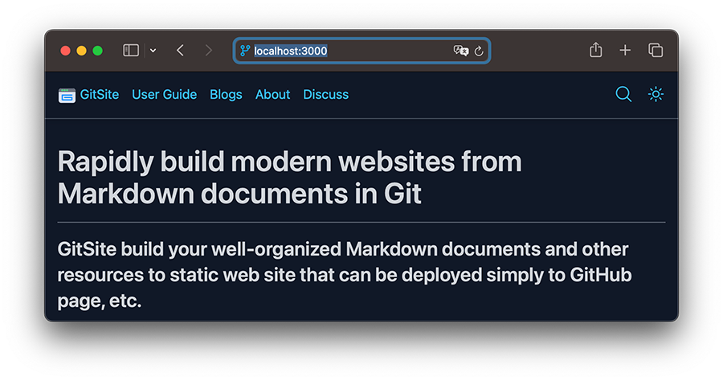
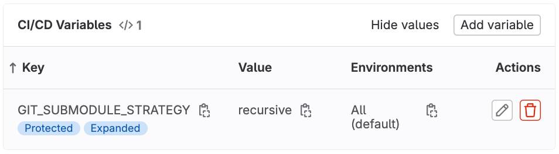

Install and Deploy

Install GitSite command line tool
Use npm to install GitSite command line tool:
$ npm install -g gitsite-cli
Use the following command to update the latest version:
$ npm update -g gitsite-cli
Setup a new site
First create an empty directory which will be used as your site's root directory and also a git repo. Let's name it as awesome:
$ mkdir awesome
Run gitsite-cli init under the awesome directory:
$ cd awesome
$ gitsite-cli init
The GitSite command line tool does the following job to initialize your new site:
- Check if current directory is an empty directory;
- Download sample site from GitHub;
- Unzip the sample site.
Now you can find the following files and directories under your awesome directory:
awesome/
├── themes/ <-- all themes
│ └── default/ <-- a theme named 'default'
│
└── source/ <-- contains all markdown docs
│
├── books/ <-- all books
│ ├── user-guide/ <-- a book
│ │ ├── book.yml <-- book name, author and description
│ │ ├── 10-introduction/ <-- chapter order and short name
│ │ │ ├── README.md <-- chapter content
│ │ │ └── test.png <-- static resources used in the chapter
│ │ ├── 20-installation/ <-- chapter
│ │ │ ├── README.md
│ │ │ ├── 10-create-repo/ <-- sub chapter
│ │ │ │ └── README.md
│ │ │ ├── 20-workflow/ <-- sub chapter
│ │ │ │ └── README.md
│ │ │ └── 30-deploy/ <-- sub chapter
│ │ │ └── README.md
│ │ └── ... <-- more chapters
│ └── ... <-- more books
│
├── blogs/ <-- all blogs
│ ├── tech/ <-- tag
│ │ ├── 2024-01-01-hello/ <-- blog date and short name
│ │ │ ├── README.md <-- blog content
│ │ │ └── hello.jpg <-- static resources used in the blog
│ │ └── ... <-- more blogs
│ └── ... <-- more tags
│
├── pages/ <-- all pages
│ ├── license/ <-- about page
│ │ └── README.md <-- page content
│ └── ... <-- more pages
│
├── 404.md <-- display as 404 page if not found
├── README.md <-- display as home page
├── favicon.ico <-- favorite icon
├── site.yml <-- site config
└── static/ <-- static resources
├── custom.css
├── logo.png
└── ...
Preview site on local
Run gitesite-cli serve to start a local HTTP server to serve the site:
$ gitsite-cli serve
Then you can visit your site on http://localhost:3000:

Update site settings
The site settings are stored in source/site.yml. You should update the settings:
- Set your site's name, description, etc;
- Set your site's navigation menus;
- Set your Disqus, Google analytics ID, or just remove it.
Deploy to GitHub page
To deploy site to GitHub page, first create a repo on GitHub and push your local files to the remote.
To enable GitHub page, go to repo - Settings - Pages - Build and deployment: select GitHub Actions.
Make a new push to trigger the Action for deployment.
The workflow script file is .github/workflows/gitsite.yml. Check the sample gitsite.yml.
You must set the root-path: /<rootPath> under which your site is served for GitHub pages deployment without custom domain, it is often /<projectName>:
site:
# set when your site is served for GitHub pages without custom domain:
root-path: /gitsite
Check the sample site.yml.
Deploy to GitLab page
It is similar to deploy site to GitLab, and GitLab requires a .gitlab-ci.yml script.
Please make sure the submodule function is enabled by: Project - Settings - CI/CD - Variables - Add variable:
Key: GIT_SUBMODULE_STRATEGY
Value: recursive

Check the sample .gitlab-ci.yml.
Deploy to CloudFlare page
To deploy site to CloudFlare page, create application from GitHub repo, then open application settings - Builds & deployments - Build configurations - Edit configurations:
- Framework preset: None
- Build command:
npm install gitsite-cli -g && gitsite-cli build -o _site -v - Build output directory:
/_site - Root directory: leave empty.
Deploy to Vercel
To deploy site to Vercel, create a new project by import GitHub repo, then configure project:
- Framework Preset: Other
- Root Direction:
./
Build and Output Settings:
- Build Command:
npm install -g gitsite-cli && gitsite-cli build -o dist -v - Output Directory:
dist - Install Command: leave empty.
Deploy to Self-hosted Nginx
GitSite generates pure HTML files by command gitsite-cli build. You can specify the output directory (default to dist) by --output or -o:
$ gitsite-cli build -o dist -v
You can run Nginx by Docker quickly:
$ docker run --rm -p 8000:80 -v /path/to/dist:/usr/share/nginx/html nginx:latest
Site is served and can be previewed at http://localhost:8000.